Tavern & Market (Arcane Curiosities Vol.3)
Twelve animated town props for top-down games: an ale barrel, a hearth, a spit roast, a tavern table, a hanging sign, a market stall, a merchant's scale, a notice board, a well, a street lantern, an anvil and a grain sack. Same 32-colour palette as Vol.1 and Vol.2.
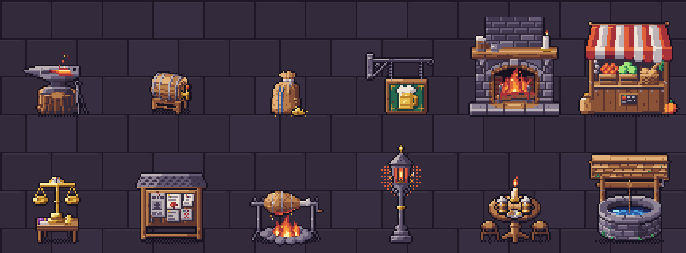
All 12 props · 32 animations
Every prop below is shown at its real frame rate. Sprites are drawn in top-down 3/4 view (key light top-left) at 32–64 px, with one 32-colour palette shared by every Arcane Curiosities volume, so props from different volumes sit together in one scene.
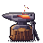
Anvil
Anvil on a stump with a red-hot bar; 'strike' brings a hammer down in a burst of sparks. Smithies, forges.
48×48 px · 2 animations: idle (12f), strike (8f, once)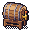
Barrel
Oak ale barrel on a cradle with a brass tap; the tap drips, 'pour' runs a stream of ale. Taverns, cellars.
32×32 px · 2 animations: idle (12f), pour (8f, once)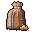
Grain Sack
Burlap grain sack with spilled grain; a 'mouse' peeks out and ducks back. Storerooms, farms, markets.
32×32 px · 2 animations: idle (16f), mouse (11f, once)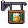
Hanging Sign
Painted tavern sign on an iron wall bracket; sways, 'swing' in a gust. Tavern and shop fronts (hang on a wall).
48×48 px · 2 animations: idle (12f), swing (10f, once)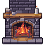
Hearth
Stone fireplace with a mantel: 'idle' fire, 'low' embers, 'stoke' flares it up. Tavern halls, cottages.
64×64 px · 3 animations: idle (12f), low (12f), stoke (8f, once)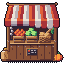
Market Stall
Wooden stall with a striped awning and crates of produce, in red, blue and green. Markets, bazaars.
64×64 px · 3 animations: idle-blue (12f), idle-green (12f), idle (12f)Merchant Scale
Brass balance on a small table; 'weigh' drops a coin and the beam tips. Shops, traders, puzzles.
32×48 px · 3 animations: idle (12f), idle_tilted (12f), weigh (12f, once)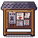
Notice Board
Roofed notice board with pinned notes and a wanted poster; 'post' pins a new note. Quest boards, town squares.
48×48 px · 3 animations: idle (12f), idle_full (12f), post (8f, once)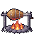
Roast Spit
Cookfire with a turning spit roast, or an 'empty' spit. Camps, kitchens, feasts.
48×48 px · 2 animations: empty (12f), idle (16f)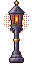
Street Lantern
Iron lamp post with a lantern: 'lit' (moths), 'unlit', 'light' it; blue magic flame variant. Streets at night.
32×64 px · 5 animations: light-soul (8f, once), light (8f, once), lit-soul (12f), lit (12f), unlit (16f)Tavern Table
Tavern table with stools, a candle and two mugs; 'clink' raises a toast. Taverns, inns.
48×48 px · 2 animations: clink (8f, once), idle (12f)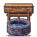
Well
Stone village well with a roof and crank; 'draw' hauls the bucket up. Villages, squares, courtyards.
64×64 px · 3 animations: draw (12f, once), idle (16f), idle_up (16f)What's in the ZIP
PNG sprite sheets with frame JSON (anchor at the feet), GIF previews, the palette (.gpl, .hex, .png), a Godot 4 project with a SpriteFrames resource and scene per prop plus a demo scene, catalog.json and SKILL.md for AI coding agents. Commercial use in your games is allowed; reselling or redistributing the art as assets is not.